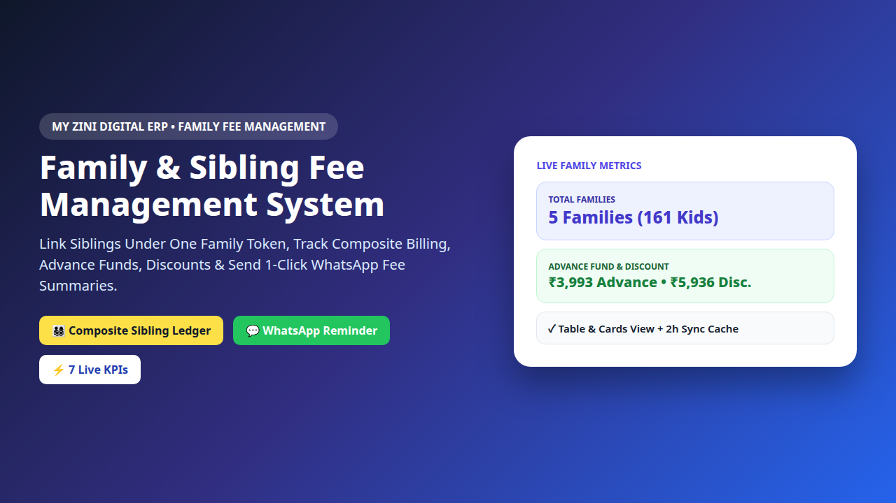
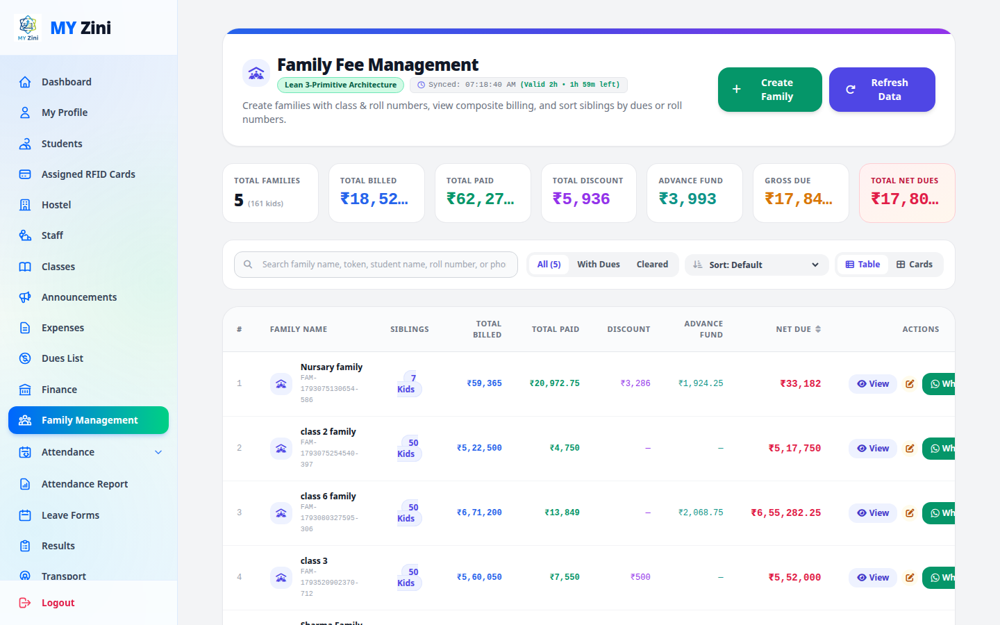
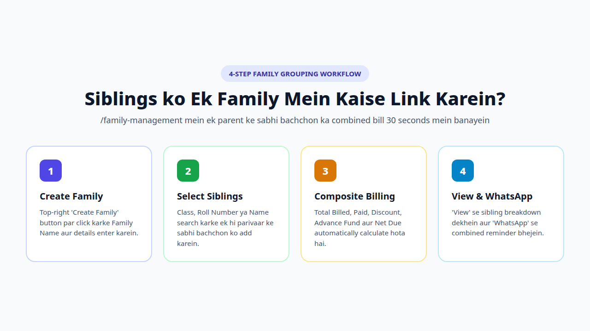
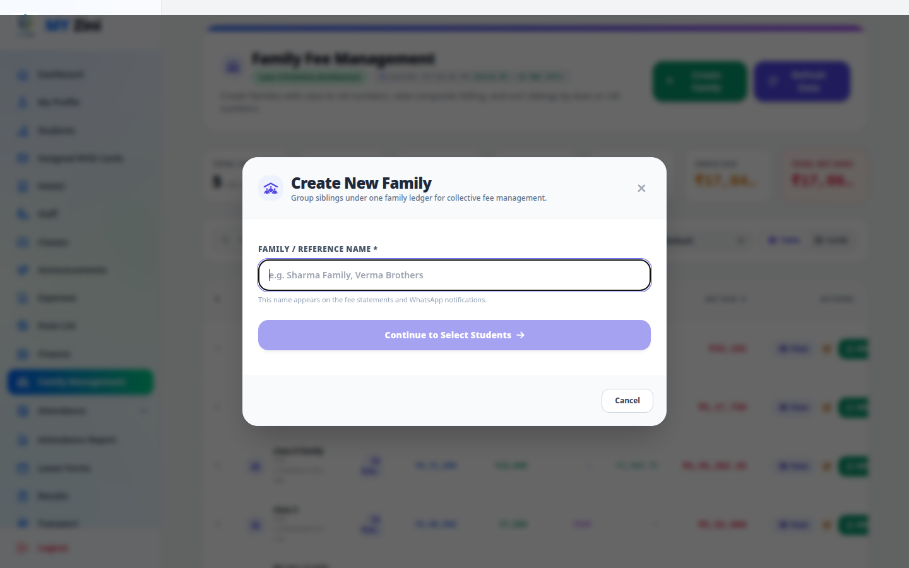
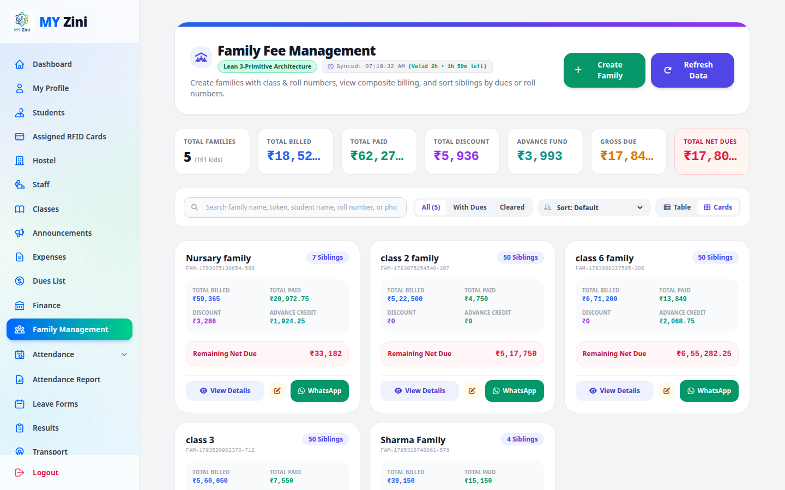
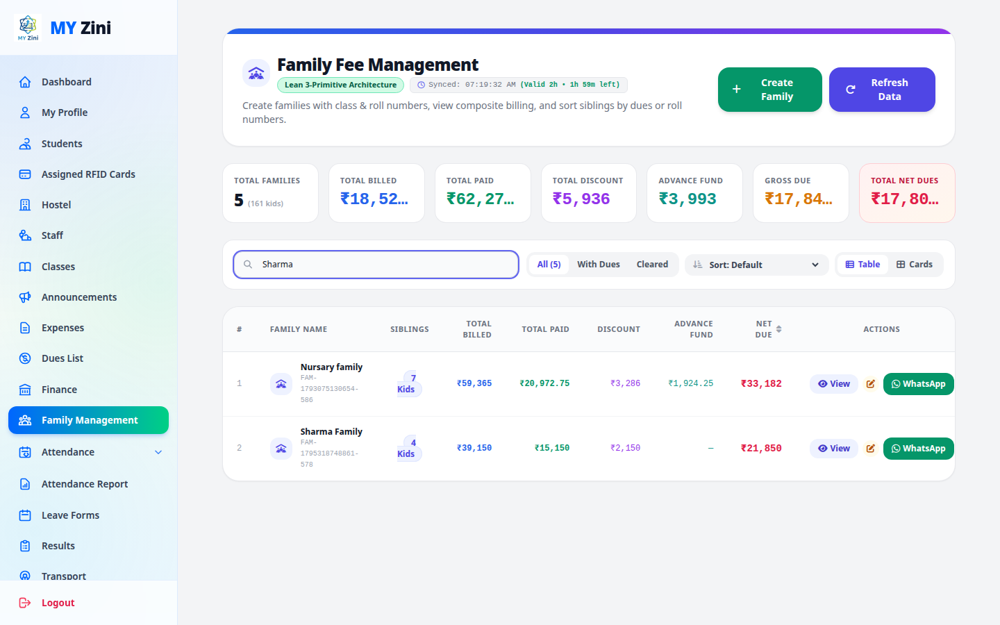
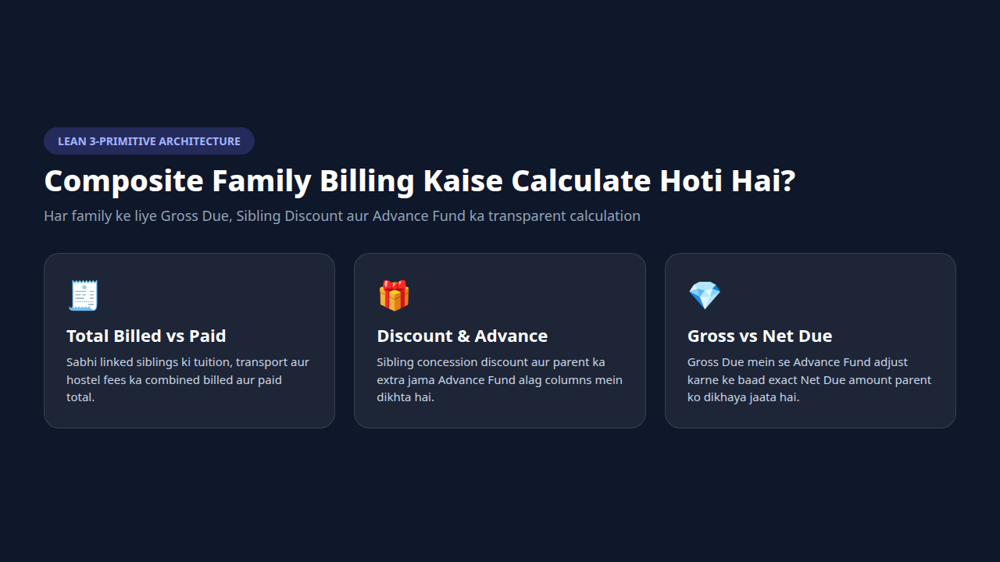
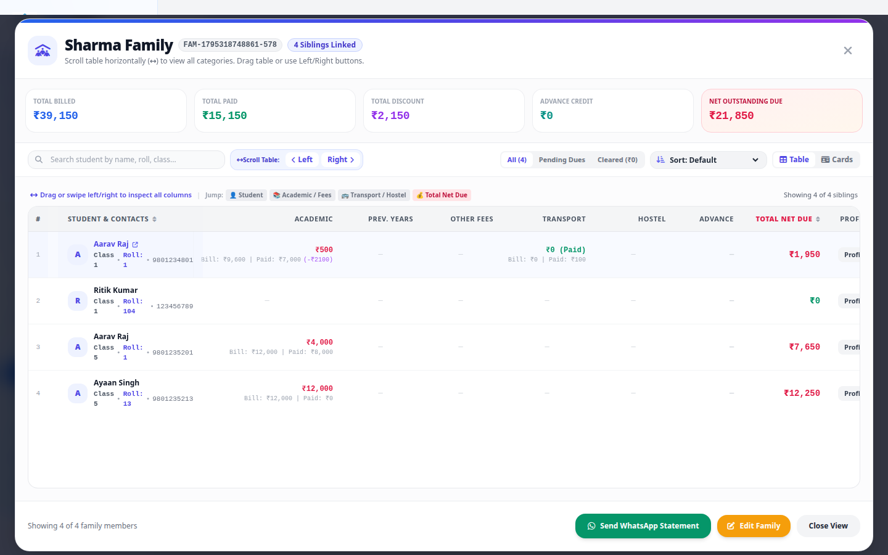
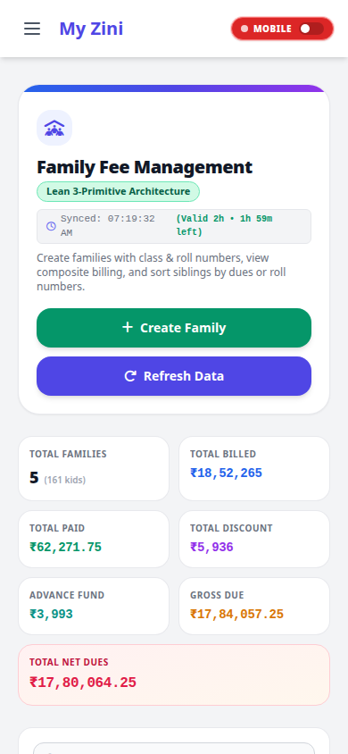
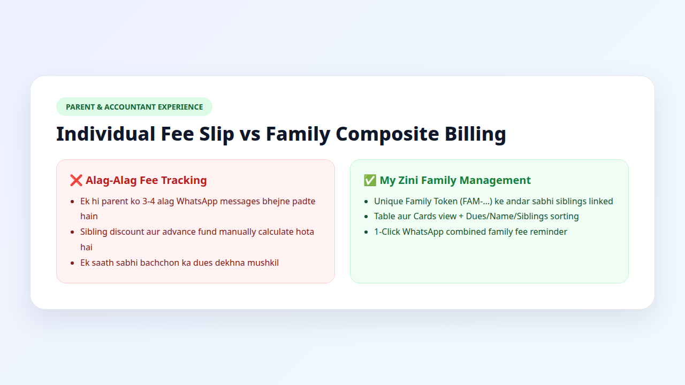

My Zini Digital ERP mein Family Management aur Sibling Fee Billing Kaise Use Karein? (Complete Hinglish Guide)
Har school mein aise kai parivaar hote hain jinke 2, 3 ya usse zyada bachche (siblings) ek hi school ki alag-alag classes mein padhte hain. Jab parents fee jama karne aate hain ya school se dues reminder jaata hai, toh har bachche ki alag-alag slip nikalna aur unka sibling discount ya advance fund manually jodna bahut mushkil ho jaata hai. Isi problem ko solve karne ke liye My Zini Digital ERP mein Family Fee Management (/family-management) — powered by Lean 3-Primitive Architecture — diya gaya hai. Is Hinglish guide mein humne live portal par har button, Create Family modal, Table/Cards view, Sibling Breakdown table aur WhatsApp Statement ko test karke poora walkthrough banaya hai.

⚡ TL;DR — Quick Summary (AI & Reader Snapshot)
- Route: Sidebar mein
Family Management(https://myzini.digitalerp.shop/family-management). - 7 Live KPI Cards: Total Families (with kids count), Total Billed, Total Paid, Total Discount, Advance Fund, Gross Due, aur Total Net Dues.
- Smart Sync Engine: Top bar par
Synced: HH:MM AM (Valid 2h)badge + manualRefresh Databutton milta hai taaki page lightning-fast load ho. - Create Family Modal: Unique
FAM-...token ke saathFAMILY / REFERENCE NAME *(e.g. Sharma Family) banayein aurContinue to Select Studentsse siblings link karein. - Family Detail View: Har sibling ka
ACADEMIC,PREV. YEARS,OTHER FEES,TRANSPORT,HOSTEL,ADVANCE, aurTOTAL NET DUEbreakdown +Send WhatsApp StatementaurEdit Family.
1. Family Fee Management Page Overview aur 7 Live KPI Cards
Jab aap left sidebar se Family Management open karte hain, toh sabse upar aapko Family Fee Management title ke saath Lean 3-Primitive Architecture badge aur live sync status (Synced: 07:18:40 AM • Valid 2h) dikhai deta hai. Right side mein do primary action buttons hain: Create Family (naya sibling group banane ke liye) aur Refresh Data (2-hour cache ko turant fresh sync karne ke liye).
Iske theek neeche 7 financial KPI cards dikhte hain jo school ke sabhi grouped families ka consolidated data dikhate hain:
👨👩👧👦 TOTAL FAMILIES
Kul kitne families aur kitne bachche linked hain (live demo: 5 families, 161 kids).
🧾 TOTAL BILLED
Sabhi linked siblings par ab tak generate hui kul fees (e.g. ₹18,52,265).
💵 TOTAL PAID
Parents dwara ab tak jama ki gayi kul rashi (e.g. ₹62,271.75).
🎁 TOTAL DISCOUNT
Sibling concession aur special fee discounts ka total (e.g. ₹5,936).
💳 ADVANCE FUND
Parents ke paas jama extra advance credit balance (e.g. ₹3,993).
⚖️ GROSS DUE vs TOTAL NET DUES
Gross Due (₹17,84,057.25) mein se Advance Fund ghatane ke baad exact Net Dues (₹17,80,064.25).

2. Create New Family: Naya Sibling Group Kaise Banayein?
Naya parivaar register karne ke liye top-right mein Create Family button par click karein. Isse Create New Family modal khulta hai jiska tagline hai: "Group siblings under one family ledger for collective fee management."

- FAMILY / REFERENCE NAME * (Required): Yahan aap parivaar ka pehchan naam daalte hain — placeholder example:
e.g. Sharma Family, Verma Brothers. System ke mutabik: "This name appears on the fee statements and WhatsApp notifications." - Continue to Select Students: Family name likhne ke baad is button par click karte hi student selector khulta hai jahan aap class, roll number ya naam ke hisab se ek hi parivaar ke sabhi siblings ko tick karke group mein add kar sakte hain.
- Auto Family Token Generation: Save hote hi har family ko ek unique ID milti hai — jaise
FAM-1795318748861-578(Sharma Family), taaki kabhi bhi naam duplicate hone par bhi record mix na ho.


3. Search, Status Filter, 5 Sort Modes aur Table vs Cards View
Bade schools mein jahan hazaron students hote hain, wahan kisi ek parivaar ko turant dhoondhne ke liye Family Fee Management mein zabardast search aur view controls milte hain:
- Multi-Field Search Box: Placeholder
Search family name, token, student name, roll number, or phone...— aap sirf ek bachche ka naam, roll number, parent ka mobile number yaFAM-token daalkar bhi poori family turant dhoondh sakte hain! - 3 Status Filter Pills:
All (5),With Dues(jin parivaaron ki fees baaki hai), aurCleared(jinka Net Due ₹0 hai). - 5 Sort Dropdown Options:
Sort: Default,Sort: Dues (High to Low),Sort: Dues (Low to High),Sort: Family Name (A-Z), aurSort: Most Siblings. - Table vs Cards View Switcher: Accountant ke liye compact Table view (9 columns) aur visual review ke liye clean Cards view — ek click mein switch karein!


4. Family Detail View: Har Sibling ka Complete Fee Breakdown & Quick Jump
Main table mein kisi bhi family ke aage View button par click karne par usi page ke neeche us parivaar ka poora Sibling Fee Breakdown Drawer khul jaata hai (jaise Sharma Family • FAM-1795318748861-578 • 4 Siblings Linked). Yahan aapko milte hain:

- 5 Family-Level Summary Cards:
TOTAL BILLED(₹39,150),TOTAL PAID(₹15,150),TOTAL DISCOUNT(₹2,150),ADVANCE CREDIT(₹0), aurNET OUTSTANDING DUE(₹21,850). - Sibling Filter & 6 Sort Options: Siblings ko filter karein (
All (4),Pending Dues,Cleared (₹0)) aur sort karein:💰 Dues (High to Low),💰 Dues (Low to High),🔢 Roll (1 to 100),🔢 Roll (High to Low),👤 Name (A to Z). - Horizontal Scroll & Quick Jump Pills: Table ko drag karne ke alawa
Left/Rightbuttons aur 4 Quick Jump pills milte hain:👤 Student,📚 Academic / Fees,🚌 Transport / Hostel, aur💰 Total Net Due. - 9 Detailed Columns per Sibling:
STUDENT & CONTACTS(Class, Roll, Mobile),ACADEMIC(Bill vs Paid),PREV. YEARS,OTHER FEES,TRANSPORT,HOSTEL,ADVANCE,TOTAL NET DUE, aur directProfilebutton! - Bottom Action Bar:
Send WhatsApp Statement(ek click mein poori family ka combined hisab WhatsApp par bhejein),Edit Family(siblings add/remove karein), aurClose View.


5. Mobile Responsive Design aur Individual vs Family Billing Fayde
Chahe office desk par laptop ho ya parent meeting ke dauran mobile phone (390px viewport), /family-management har screen par cleanly fit ho jaata hai. Neeche live mobile screenshot aur paperless comparison dekhein:


Quick Reference Table: /family-management Cheat Sheet
| Feature / Control | Location / Button | Kya Kaam Karta Hai? |
|---|---|---|
| Create Family | Top-Right Create Family | Naya Family Name aur unique FAM-... token banata hai |
| 2-Hour Cache Sync | Synced badge + Refresh Data | Fast loading ke saath 1-click live recalculation |
| View Switcher | Table / Cards | 9-column ledger table ya visual family cards view |
| Quick Jump Pills | Student, Academic, Transport/Hostel, Net Due | Sibling breakdown table ke specific columns par instant scroll |
| WhatsApp Statement | WhatsApp / Send WhatsApp Statement | Sabhi siblings ka combined fee summary parent ko bhejta hai |
Frequently Asked Questions (FAQs)
1. Family Fee Management mein "Lean 3-Primitive Architecture" aur "Valid 2h" Sync ka kya matlab hai?
Iska matlab hai ki system 160+ siblings aur hazaron fee transactions ko bhi 1 second ke andar load karne ke liye smart 2-hour cache use karta hai. Jab bhi aap koi naya payment lein ya naya student add karein, toh top par maujood Refresh Data button dabakar aap turant real-time sync kar sakte hain.
2. Kya ek family mein alag-alag classes (jaise Class 1 aur Class 5) ke siblings ko link kiya ja sakta hai?
Haan bilkul! Live portal par Sharma Family mein Class 1 ke 2 students aur Class 5 ke 2 students ek hi Family Token (FAM-1795318748861-578) ke andar linked hain. Chahe ek bachcha Nursery mein ho aur doosra Class 12 mein, dono ek hi family ledger mein dikhte hain.
3. Gross Due aur Total Net Dues mein kya antar hai?
Gross Due sabhi students ki baaki fees ka total hota hai. Agar kisi parent ne pehle se koi extra paisa jama kar rakha hai (jise Advance Fund kehte hain), toh system Gross Due mein se Advance Fund ghatakar exact Total Net Dues dikhata hai taaki parent se sirf sahi bacha hua paisa maanga jaaye.
4. Sibling Detail View mein Transport aur Hostel fees alag se kyun dikhti hain?
Har bachche ki zaroorat alag ho sakti hai — ho sakta hai bada bhai hostel mein rehta ho aur chhoti behen school bus se aati ho. Isliye breakdown table mein ACADEMIC, PREV. YEARS, OTHER FEES, TRANSPORT, aur HOSTEL ke alag-alag columns diye gaye hain taaki parent ko 100% transparency mile.
5. Kya Family Detail View se kisi ek bachche ka full profile khola ja sakta hai?
Haan! Sibling breakdown table ke sabse right column PROFILE mein har student ke aage ek blue Profile button diya gaya hai. Is par click karte hi aap seedha us student ke individual profile aur fee ledger par pahunch jaate hain.
6. Baad mein agar parivaar ka teesra bachcha school mein admission le toh use kaise add karein?
Bahut aasaan hai! Us family ke View drawer ke neeche Edit Family button par click karein. Wahan se aap naye admitted student ko search karke usi existing family group mein add kar sakte hain ya kisi pass-out student ko remove kar sakte hain.
7. Dues List (/dues-list) aur Family Management (/family-management) ek saath kaise kaam karte hain?
Dues List mein aapko Exclude Family Sibling Concession jaise filters milte hain, aur Family Management aapko un sabhi siblings ka composite ledger aur combined WhatsApp statement deta hai. Dono modules ek-doosre ke data ke saath automatically synced rehte hain.
8. Send WhatsApp Statement button dabane par parent ko kya dikhta hai?
Parent ke WhatsApp par ek well-formatted composite message jaata hai jisme unki Family Name (jaise Sharma Family), sabhi linked bachchon ke naam, unka Total Billed, Total Paid, Discount aur final Net Outstanding Due saaf-saaf likha hota hai.
9. Apne school ke liye My Zini Digital ERP kaise shuru karein?
Aap Digital ERP Registration Form par jaakar sirf ₹100 Registration Fee ke saath apna school register kar sakte hain aur Family & Sibling Fee Management ka use aaj hi shuru kar sakte hain.
10. Family Search mein agar parent ka naam yaad na ho toh kaise dhoondhein?
Search bar mein aapko sirf Family Name daalne ki zaroorat nahi hai. Aap kisi bhi ek sibling ka Student Name, Roll Number, Phone Number, ya Family Token (FAM-...) type karke bhi poori family ko turant filter kar sakte hain.
11. Cleared aur With Dues tabs ka daily fee counter par kya use hai?
Month ke end mein recovery follow-up ke liye Accountant sirf With Dues tab aur Sort: Dues (High to Low) select karte hain. Isse sabse zyada pending dues wale parivaar list mein sabse upar aa jaate hain aur recovery calls fast ho jaati hain.
12. Kya Generator Tools se Family Bills PDF/Print bhi nikal sakte hain?
Haan! My Zini ERP ke Generator Tools (/generator-tools) mein dedicated Family Bills generator bhi maujood hai jahan se aap grouped family fee slips print karke parents ko de sakte hain.
13. Family Detail View mein "Roll (1 to 100)" aur "Roll (High to Low)" sort ka kya fayda hai?
Jab ek family mein 4 se 7 ya usse zyada bachche linked hote hain (jaise Nursary family mein 7 kids ya bulk class families mein 50 kids), tab roll number ya dues ke hisab se sort karne par accountant ko kisi bhi specific student ko list mein turant locate karne mein aasani hoti hai.
14. Agar kisi sibling ka fee status "Cleared (₹0)" ho toh woh kaise dikhta hai?
Sibling Detail View ke filter bar mein Cleared (₹0) tab diya gaya hai. Is par click karte hi sirf wahi siblings dikhte hain jinki saari tuition, transport aur hostel fees poori tarah jama ho chuki hain (jaise Ritik Kumar • Class 1 • ₹0).
15. Kya kisi family ko delete ya rename kiya ja sakta hai?
Haan, Family Detail View ke bottom bar mein maujood Edit Family button par click karke aap Family / Reference Name update kar sakte hain, naye siblings ko group mein jod sakte hain, ya kisi student ko family group se hata sakte hain.
16. Mobile screen par 9-column Sibling Breakdown table kaise dekhein?
Mobile aur tablet users ke liye table ke theek upar Scroll Table: Left / Right buttons aur 4 Quick Jump pills (👤 Student, 📚 Academic / Fees, 🚌 Transport / Hostel, 💰 Total Net Due) diye gaye hain. Saath hi aap Cards view par switch karke bina horizontal scroll kiye har sibling ka card padh sakte hain.
17. Family Fee Management use karne se school ki fee recovery par kya asar padta hai?
Jab parents ko ek hi combined statement mein sabhi bachchon ka Total Billed, Discount, Advance Credit aur exact Net Due ek saath milta hai, toh confusion khatam ho jaati hai. Schools ne dekha hai ki combined WhatsApp Family Statements bhejne se monthly fee recovery speed 2x tak badh jaati hai.
Real School Scenarios: Family Management ka Daily Use
1. Parent Visit at Fee Counter
Jab ek parent apne 3 bachchon ki fees ek saath dene aaye, toh counter operator sirf phone number search karke View kholte hain aur 5 second mein teeno bachchon ka exact Net Due bata dete hain.
2. Monthly WhatsApp Fee Recovery
Har mahine ki 15 tarikh ko With Dues filter lagakar sabhi pending families ko ek-ek karke WhatsApp statement bhejne se parent ko ek hi message mein sabhi bachchon ka hisab mil jaata hai.
3. Sibling Discount & Advance Verification
PTM ya annual audit ke dauran Principal sirf Cards view kholkar har family ka Total Discount aur Advance Fund ek nazar mein verify kar sakte hain.
4. Transport & Hostel Sibling Reconciliation
Agar ek sibling bus leta hai aur doosra hostel mein rehta hai, toh Quick Jump pill 🚌 Transport / Hostel dabakar dono ka alag-alag charge ek hi screen par check kiya ja sakta hai.
Pro Tip: Admission ke waqt hi agar kisi naye student ka bhai ya behen pehle se school mein padh raha hai, toh usi din Edit Family se use existing family mein link kar dein — isse poore saal sibling discount aur combined billing 100% automatic rahegi. Saath hi har mahine WhatsApp Statement bhejne se pehle ek baar Refresh Data zaroor dabayein taaki latest payments aur advance credits turant reflect hon.